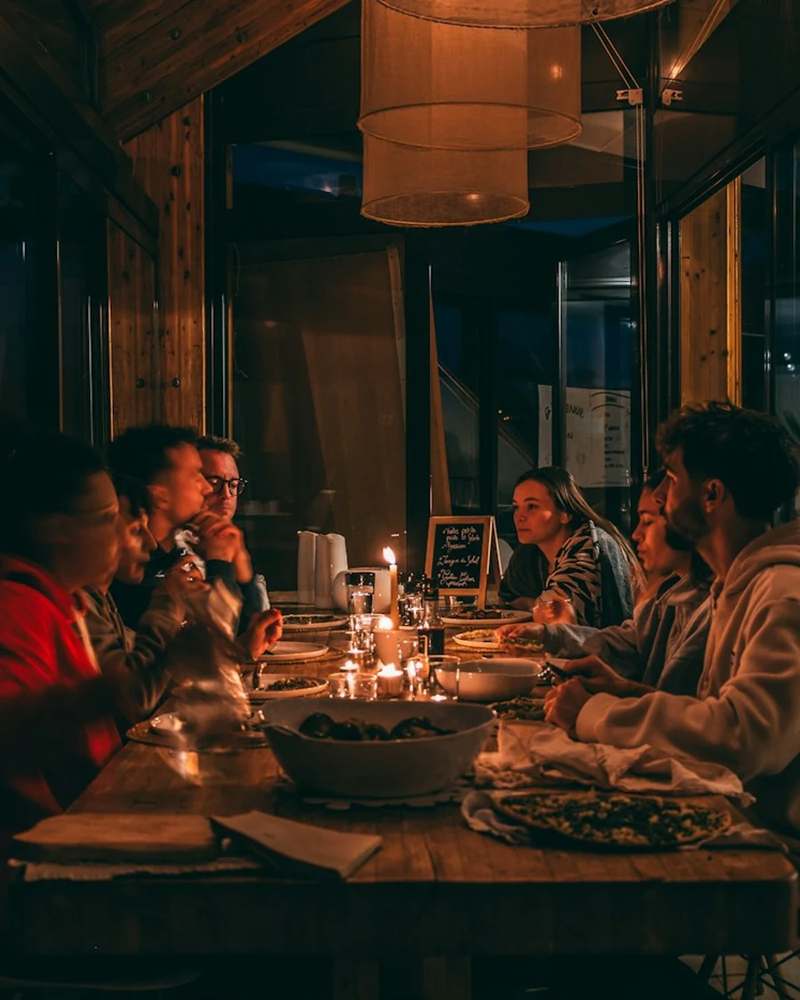
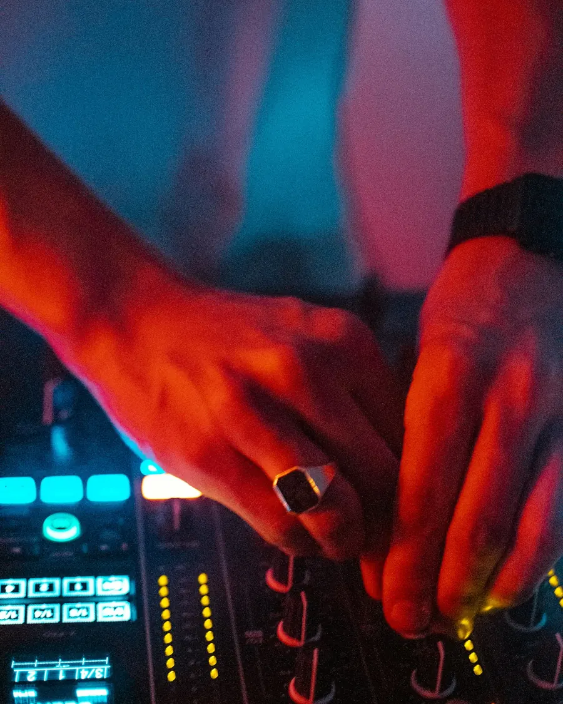
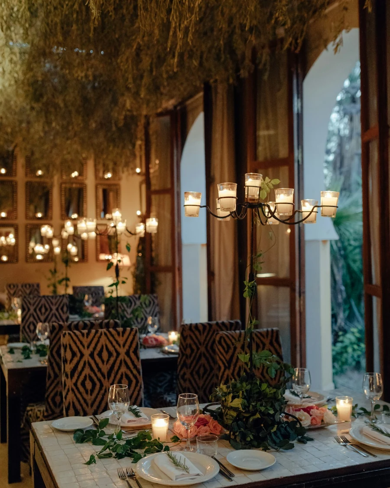
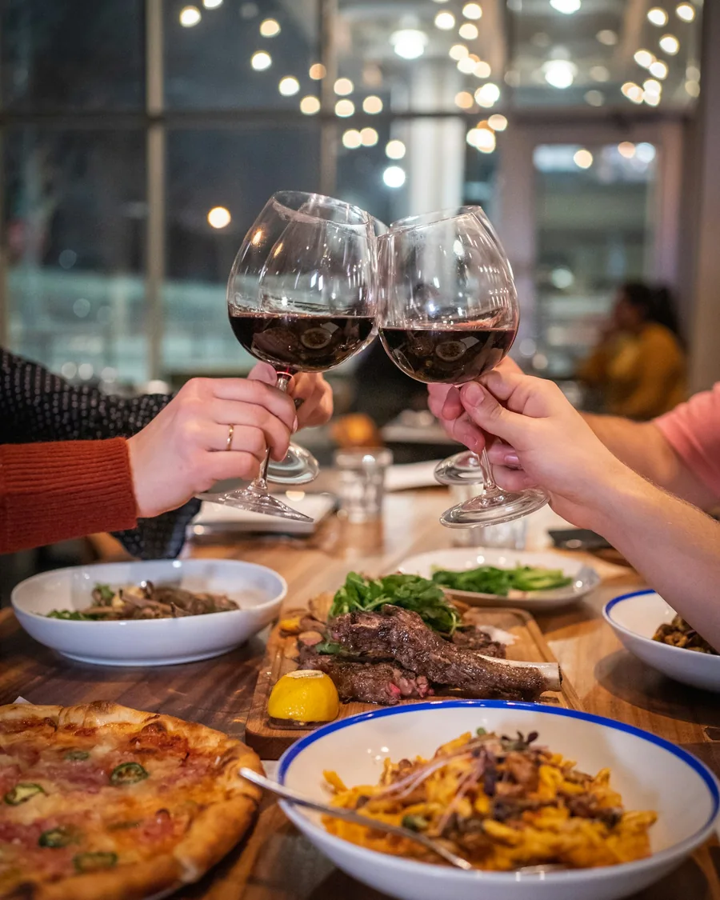
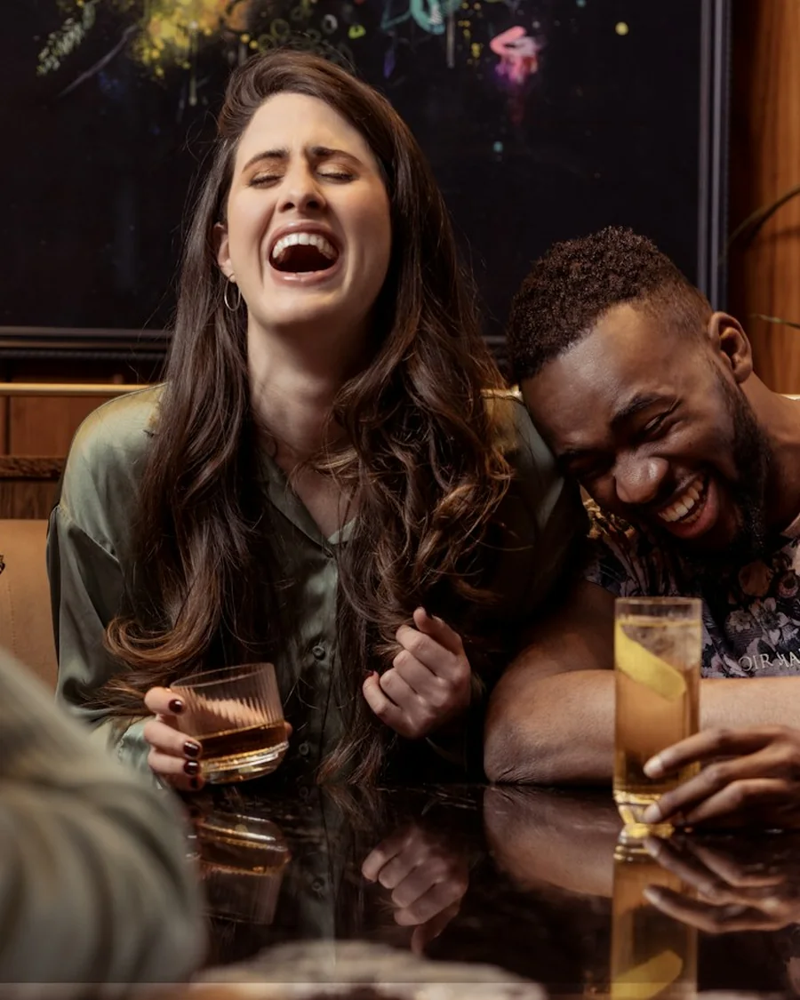
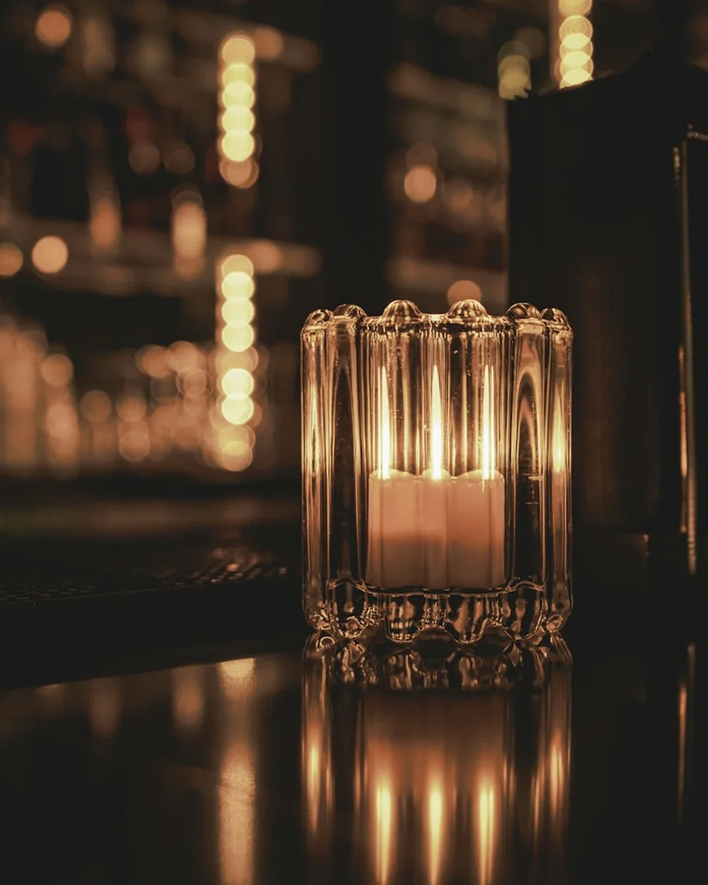

Хорошийповод статьближе.
Вечер разговоров, музыки и новых знакомых. Встретимся в одном месте — остальное сложится.
Принять приглашение28 ноябрясуббота, 18:30
Москвалофт «Комната»
Коснитесь билета.
У него есть другая сторона.
Встречи,
которые остаются.
Отложить дела. Поделиться тем, что увлекает. Услышать любимую песню и задержаться чуть дольше, чем планировали.






Никакой спешки.
Только планы
на этот вечер.
Приходите к началу —
встретим, познакомим, нальём что-нибудь вкусное.
Собираемся
Первый напиток, первые улыбки. Осваиваемся и выбираем удобное место.
Становимся ближе
Знакомимся за общим столом. Без микрофона и обязательных представлений.
Музыка и ужин
Делимся блюдами, историями и песнями, которые хочется услышать вместе.
Остаёмся ещё
Свободный вечер. Продолжим разговор, потанцуем или просто побудем рядом.
Увидимся
в «Комнате».
Камерный лофт, большой стол и мягкий свет. Всё, что нужно, чтобы город остался за дверью.
- Где
- Москва, лофт «Комната»Точный адрес — в личном приглашении
- Когда
- 28 ноября 2026Собираемся с 18:30
Будете
с нами?
Хороший вечер начинается
с простого «да».
Дату можно сохранить в календарь.
Можно прийти одному?
Конечно. Этот вечер как раз для новых знакомств. Встретим у входа и поможем освоиться.
Есть дресс-код?
Приходите в том, в чём вам удобно. Главное — хорошее настроение и желание провести вечер вместе.